Unidad 5 ggplot. Hacia la pirámide de población
5.1 Introducción
En esta sección vamos a explorar la utilidad de R para la visualización de contenido demográfico. En Riffe y otros (2021) se publicó una colección de artículos sobre ejemplos de “buena” visualización en este tema. Tambén se reseña un poco de la historia en el tema y se concluye con algunas recomendaciones a la hora de pensar cómo mostrar lo que queremos comunicar.
En la unidad previa trabajamos con una muestra censal a nivel de registro. Aquí contaremos con una distribución por edad y sexo de la población censada en los dos últimos censos e iremos recorriendo distintas formas su contenido.

5.2 ggplot
El paquete ggplot del entorno tidyverse tiene sus fundamentos en la gramática de gráficos (Wilkinson, 2005). ¿Qué es un gráfico estadístico?. La idea es “generalizar” su construcción tal que un paquete no sea una colección de casos especiales.
Todo gráfico esta compuesto por:
- Datos
- Capas
- Expresión geométrica de los datos. Lás más comunes son:
- Puntos (geom_point)
- Líneas (geom_line)
- Barras (geom_bar)
- Puntos (geom_point)
- Estética determinada: ¿quién es “x”?, ¿quién es “y”?, tamaño, color y forma (entre otros)
- Transformación estadística (segmentar por percentiles, o ajustar un modelo lineal)
- Expresión geométrica de los datos. Lás más comunes son:
- Sistema de coordenas y Escalas: las medidas relativas con las cuales interpretar los datos y su transformación visual. Personalización de ejes y leyenda, por ejemplo.
Obtengamos la población censal por provincia de los dos últimos censos, en “Data/PoblCensal01y10.xlsx”. Seleccionemos CABA y veamos su distribución por edad en 2010 con ggplot.
N_CABA <- N_Censo %>% filter(PROV_NOMBRE == "CIUDAD AUTONOMA DE BUENOS AIRES" & CENSO==2010)
# genero un primer gráfico con los tres elementos básicos:
ggplot(data = N_CABA, # data
aes(x = EDAD, y = VARON)) + # estética
geom_line() # geometría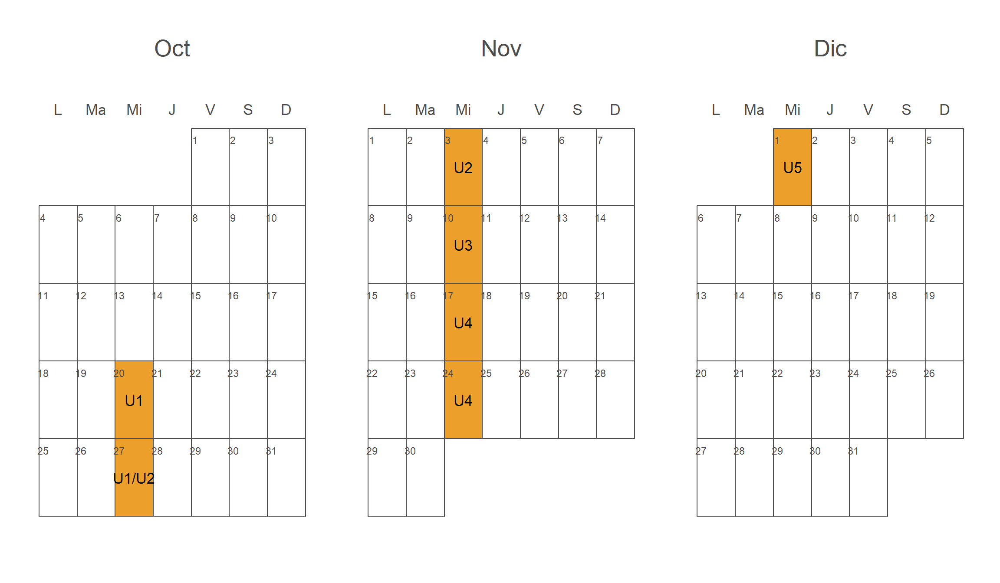
Lo bueno de >%>:
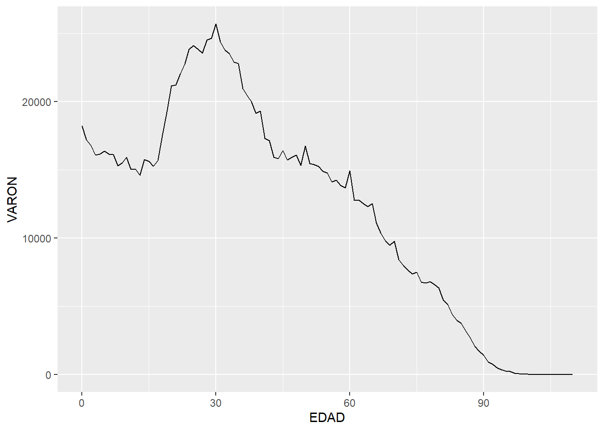
Podemos compararla con otras provincias en 2010, como Formosa y Entre Ríos, distinguiéndolas por color. Tomemos los varones. ¿Qué observaciones podemos hacer?
# creo un vector con las seleccionadas, y filtro la base
Provincias = c("FORMOSA", "ENTRE RIOS", "CIUDAD AUTONOMA DE BUENOS AIRES")
N_Provs <- N_Censo %>%
filter(PROV_NOMBRE %in% Provincias, CENSO==2010)
# genero un primer gráfico con los tres elementos básicos:
ggplot(data = N_Provs, # data
aes(x = EDAD, y = VARON, color = PROV_NOMBRE)) + # estética
geom_line() # geometría
Podemos adicionar otra capa geométrica de puntos distinguiendo adicionalmente por forma (atributo estético adicional). Estos pueden ser incluidos directamente en la capa correspondiente:
g_Provs <- ggplot(data = N_Provs,
aes(x= EDAD, y = MUJER, color = PROV_NOMBRE)) +
geom_line() +
geom_point(aes(shape = PROV_NOMBRE))
g_Provs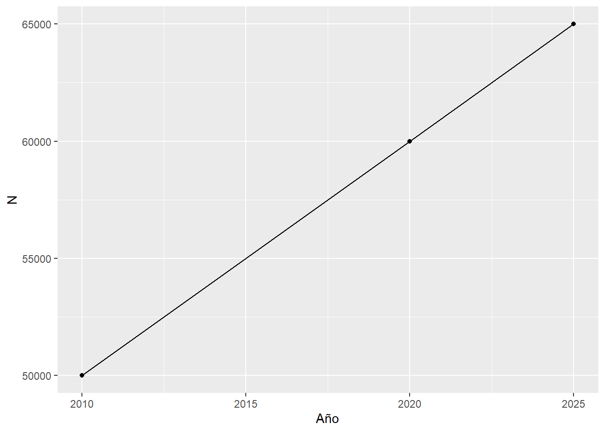
Agreguemos un título, un subtítulo, modifiquemos el tamaño del punto, la posición y título de la leyenda, y especifiquemos las marcas en el eje x:
g_Provs <- g_Provs + # partimos del objeto anterior
labs(title = "Población de varones por edad. Año 2010",
subtitle = "Provincias seleccionadas",
caption = "Fuente: INDEC",
x = "Edad", y = "Varones") +
theme(legend.position = "bottom",
legend.direction = "horizontal",
legend.title = element_blank()) +
scale_x_continuous(breaks = seq(0,100,10)) # ups!
g_Provs
Podemos definir una paleta de colores, cambiar la temática de fondo por una más simple y suavizar las series con algún modelo. Adicionalmente mediante ggsave podemos guardar el objeto como imágen en la extensión que se desee.
mi_paleta <- c("#000000", "#E69F00", "#56B4E9") # sistema Hexadecimal de colores
g_Provs <- g_Provs +
scale_colour_manual(values = mi_paleta) +
theme_bw() +
geom_smooth(method = 'loess', span=.5) # podés jugar con span (0,1)
ggsave(filename = "g_Provs.pdf", plot = g_Provs)
g_Provs
Podés encontrar más colores y paletas prediseñadas, temáticas predefinidas o mediante el paquete ggthemes, y formas de suavizar una serie continua (aquí utilizamos ?loess).
Para continuar nuestro camino hacia la pirámide de población con ggplot, conviene que Sexo sea una única variable con dos categorías (una variable de tipo factor). Una buena idea: siempre tratar con tidy data.

Para esto utlizaremos las funciones pivot (antiguamaente llamadas gather y spread, por si lo ves en la web). Leamos la hoja de ayuda (cheat sheet) de tidyr juntos, otro paquete del entorno tidyverse. Y quedémonos por el momento con Entre Ríos.
N_ER <- N_Provs %>%
pivot_longer(cols = c(VARON, MUJER), names_to = "Sexo", values_to="N") %>%
mutate(Sexo = as.factor(Sexo)) %>%
filter(PROV_NOMBRE == "ENTRE RIOS") %>%
select(-PROV_CODIGO)
head(N_ER)Tenemos nuestra tabla preparada, es el momento de pasar a una geometría de barras. Al momento de trabajar con barras, fill equivale al atributo color de líneas o puntos. Podemos incluir el condicional de signo dentro de la definición de ejes (o de manera previa mediante mutate):
Pir_ER <- ggplot(data = N_ER,
aes(x = EDAD, y = ifelse(Sexo == "VARON", -N, N), fill = Sexo)) +
geom_bar(stat = "identity") # que ggplot no trate de contar cual histograma
Pir_ER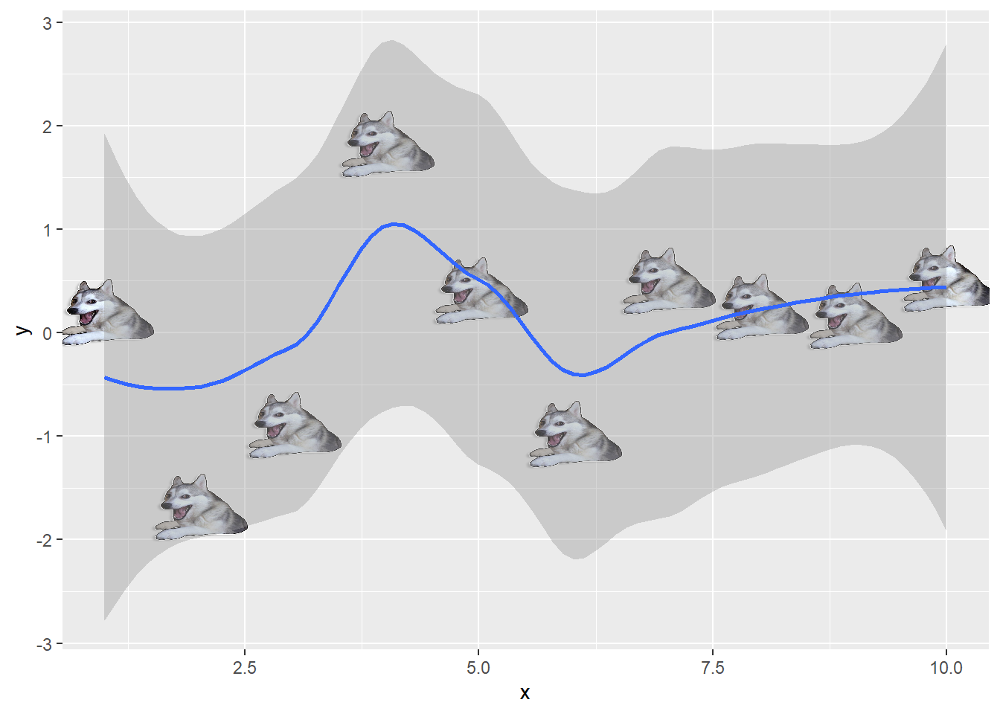
Ups! Hay que dar vuelta (flip) la pirámide. Podemos hacerle unos cambios adicionales de paso: fijar los límites horizantales y mostrar solo absolutos, incluir titulo, subtítulo y fuente, cambiar las etiquetas de ambos ejes, incluir un tema distinto y cambiar el color de las barras.
Pir_ER <- Pir_ER +
coord_flip() +
scale_y_continuous(labels = abs, limits = max(N_ER$N) * c(-1,1)) +
scale_x_continuous(labels = seq(0,110,5), breaks = seq(0,110,5), limits=c(0, 110)) +
labs(y = "Población", x = "Edad",
title = "Pirámide de población. Año 2010",
subtitle = "Entre Ríos",
caption = "Fuente: en base a INDEC") +
scale_fill_manual(values = c("red", "green")) +
theme_bw()
Pir_ER 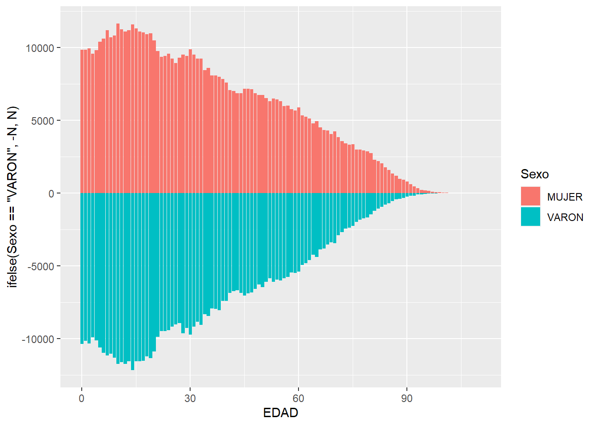
Probablemente querramos comparar provincias, para lo que podemos usar las opciones de faceting :
N_Provs <-N_Provs %>%
pivot_longer(cols = c(VARON, MUJER), names_to = "Sexo", values_to="N")
Pirs <- N_Provs %>%
ggplot(aes(x = EDAD, y = ifelse(Sexo == "VARON", -N, N), fill = Sexo)) +
geom_bar(stat = "identity") +
coord_flip() +
scale_y_continuous(labels = abs,
limits = max(N_Provs$N) * c(-1,1)) +
labs(y = "Población", x = "Edad") +
labs(title = "Pirámide de población. Año 2010",
subtitle = "Entre Ríos",
caption = "Fuente: INDEC") +
scale_fill_manual(values = c("red", "green")) +
theme_dark() +
facet_grid(rows = vars(PROV_NOMBRE)) # o cols?
Pirs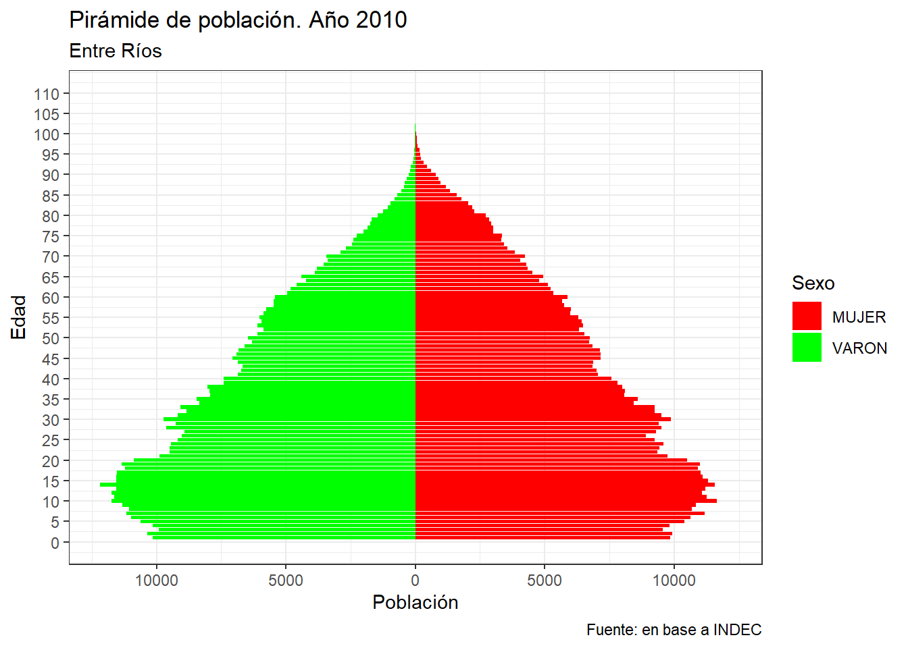
¿El gráfico nos permite inferir estadíos transicionales? Mmm… Deberíamos verlo en porcentajes. Todo en una sentencia:
PirsPorc <- N_Provs %>%
group_by(PROV_NOMBRE, Sexo) %>%
mutate(Np = round(N/sum(N)*100,2))%>%
ggplot() +
aes(x = EDAD, y = ifelse(Sexo == "VARON", -Np, Np), fill = Sexo) +
geom_bar(stat = "identity") +
coord_flip() +
scale_y_continuous(labels = abs) +
labs(y = "Porcentaje de población", x = "Edad") +
theme_bw() +
scale_fill_manual(values =c("blue", "gold"))+
facet_grid(cols = vars(PROV_NOMBRE))
PirsPorc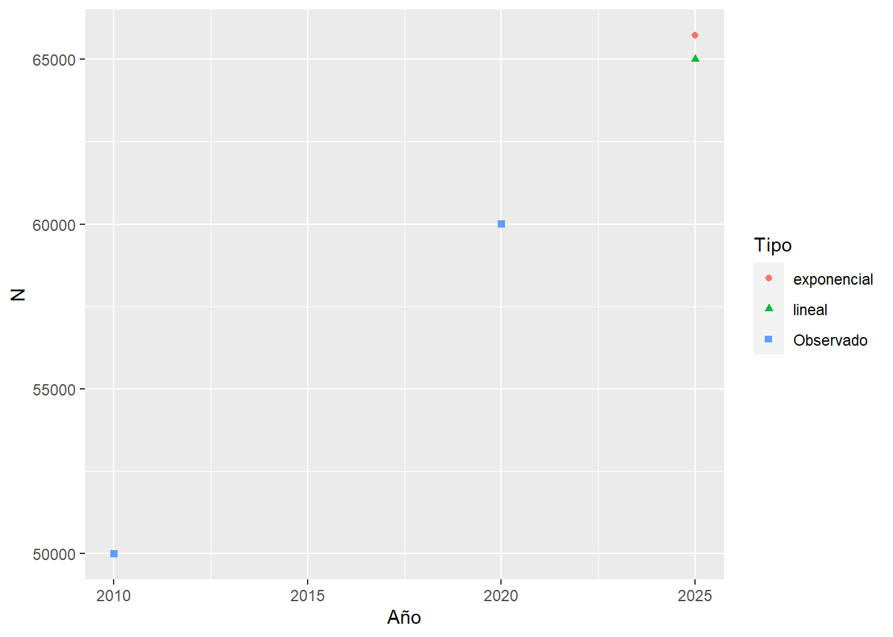
¡Ahora sí! Estamos en condiciones de percibir visualmente qué nos dice el stock por edad y sexo: envejecimiento, efecto migratorio, patrones de declaración censal de edad. ¿Qué más? Quizás si fuera un gráfico interactivo… Un bonus track utilzando plotly:
#install.packages("plotly")
library(plotly)
PirsPorc_plotly <- ggplotly(PirsPorc + aes(text = Np), tooltip= "text") 5.2.1 Actividad
Realizar un gráfico de línea con el índice de masculinidad por edad de la provincia que prefiera, dándole a cada censo un color distinto (al pasar a ser una categoría debe ser factor).
Hacer el mismo gráfico pero comparando 5 provincias en 2010.
El primer autor te escribe para incluir el gráfico previo en una publicación. ¿Qué modificaciones le harías para dejarlo listo?
Construir la pirámide de población de CABA, colocando ambos censos uno debajo del otro.
5.3 Reproduciendo
¿Te parece genial la figura 1 del paper Quantifying impacts of the COVID-19 pandemic through life-expectancy losses: a population-level study of 29 countries de Aburto y Otros (2021)? Podemos recrearlo gracias a que los autores lo permiten aquí, haciendo su paper reproducible. Iremos comentando los pasos:
# necesitamos algunas librerías que no tenemos aún. Si no las tenés debes instalarlas primero
#install.packages("hrbrthemes")
library(hrbrthemes)
# cargar la data
df_ex_ci <- read_rds("Data/df_ex_ci.rds")
# crear el gráfico
fig_1 <- df_ex_ci %>%
# primero factorizar según el número actual dela variable
mutate(name = name %>% fct_reorder(rank_e0f19)) %>%
# me interesa ciertas edades
filter(age %in% c(0, 60)) %>%
# si hay alguna NA sacar la fila
drop_na(name) %>%
# una forma de seleccionar
transmute(name, sex, age,ex_2015, ex_2019, ex_2020 = ex) %>%
# hete aquí un pivot...
pivot_longer(cols = ex_2015:ex_2020,
names_to = "year", values_to = "ex", names_prefix = "ex_") %>%
mutate(age = age %>% as_factor()) %>%
# ggplot
ggplot()+
# un color por sexo, una forma por año
geom_point(aes(x = ex, y = name, color = sex, shape = year))+
# separar un poco con líneas grises
geom_hline(yintercept = seq(2, 28, 2), size = 5, color = "#eaeaea")+
# personalizar qué formas, tamaños y colores usar
scale_shape_manual(values = c(124, 43, 16))+
scale_size_manual(values = c(4, 4, 1.5))+
scale_color_manual(values = c("#B5223BFF", "#64B6EEFF"))+
# donde colocar los nombres de los ejes
scale_y_discrete(position = "right")+
scale_x_continuous(position = "top")+
# facet por edad, sin respetar escala
facet_grid(~age, scales = "free_x")+
# tipo especial de fuente de letra
theme_minimal(base_family = font_rc)+
# sin leyenda, líneas horizonatales y demases
theme(
legend.position = "none",
panel.grid.major.y = element_blank(),
panel.grid.minor.y = element_blank(),
strip.text = element_blank(),
panel.spacing.x = unit(2, "lines"),
axis.text.y = element_text(face = 2))+
# etiquetas de ejes
labs(x = "Life expectancy, years",y = NULL)
# guardarlo como pdf:
ggsave("fig_1.pdf", fig_1, width = 6, height = 4.5, device = cairo_pdf)Las etiquetas en referencia a la edad y la formas de los puntos las realizaron posteriormente con annotate, una función que permite incluir (encima) texto u otras figuras geométricas en el plano.
5.4 LexisPLotR
Gráfico útil para representar la dinámica poblacional de ingreso y permanencia en un estadío demográfico según edad, tiempo calendario (o período) y año de nacimiento (o cohorte). Su aplicación más común es en mortalidad, pero es generalizable a la relación exposición~evento con múltiples usos.

Los elementos principales de análisis son:
- Líneas de vida (45°)
- Segmentos horizontales y verticales
- Superficies

Ejemplos de uso del diagrama utilizando R:
Mortalidad por conflictos armados (replicable):
 Fuente: Alburez et. al (2019)
Fuente: Alburez et. al (2019)Sobremortalidad masculina en Inglaterra y Gales (1841-2013):
 Fuente: Schöley & Willekens (2017)
Fuente: Schöley & Willekens (2017)
Construyamos el diagrama básico del inicio. Para eso haremos uso del paquete LexisPlotR creado por Philipp Ottolinger (gracias Otto). Construyó un set de funciones basadas en ggplot que facilita la creación de diagramas haciéndolo un ejercicio intuitivo.
# install.packages("devtools")
# devtools::install_github("ottlngr/LexisPlotR") #¿Cómo no esta en CRAN?
library(LexisPlotR)
library(tidyverse)
# creamos el objeto "mylexis", definiendo el rango de sus ejes: los primeros 10 años de vida durante 2010-2019. Aquí podemos especificar un "delta" si es que nos interesan los grupos quinquenales.
mylexis <- lexis_grid(year_start = 2010, year_end = 2019, age_start = 0, age_end = 10)
# pintamos la edad 2
mylexis <- lexis_age(lg = mylexis, age = 2)
# pintamos el año 2015, de gris en este caso.
mylexis <- lexis_year(lg = mylexis, year = 2015, fill = "grey")
# Ahora la cohorte 2015
mylexis <- lexis_cohort(lg = mylexis, cohort = 2015)
# Una línea de vida, ¡elemento fundamental del diagrama!
mylexis <- lexis_lifeline(lg = mylexis, birth = "2001-09-23", lwd = 1, colour = "pink")
# Al ser un objeto ggplot, podemos incorporarle atributos, como el título
mylexis <- mylexis + labs(x="Año", y = "Edad",title = "Diagrama de Lexis. Elementos de análisis")
# Para crear polígonos, el autor se basa en la geometría "geom_polygon". Creamos un cuadrado. El orden de los datos es importante. Además podemos crear muchos polígonos al mismo tiempo señalando los grupos.
square <- data.frame(group = c(1, 1, 1, 1),
x = c("2012-01-01", "2012-01-01", "2013-01-01", "2013-01-01"),
y = c(4, 5, 5, 4))
mylexis <- lexis_polygon(lg = mylexis, x = square$x, y = square$y, group = square$group)
# Creamos el triángulo. ¿A qué refiere?
triangle <- data.frame(group = c(1, 1, 1),
x = c("2017-01-01", "2018-01-01", "2018-01-01"),
y = c(6, 6, 7))
mylexis <- lexis_polygon(lg = mylexis, x = triangle$x, y = triangle$y, group = triangle$group)
# Imprimimos!
mylexis
Adicionalmente, si trabajamos con población donde la exposición puede ser truncada (por derecha o izquierda), podemos graficar líneas de vida que respeten ese comportamiento. Tambien podemos señalar con una cruz la ocurrencia del evento de salida que se estudia.
# ingresa al estudio sobre deserción escolar en el año 2012 un niño/a nacido en el año 2005, abandonando el colegio a los 9 años de edad:
mylexis <- lexis_lifeline(lg = mylexis,
birth = "2005-09-23",
entry = "2012-06-11", exit = "2015-02-27", lineends = T,
colour = "red")
mylexis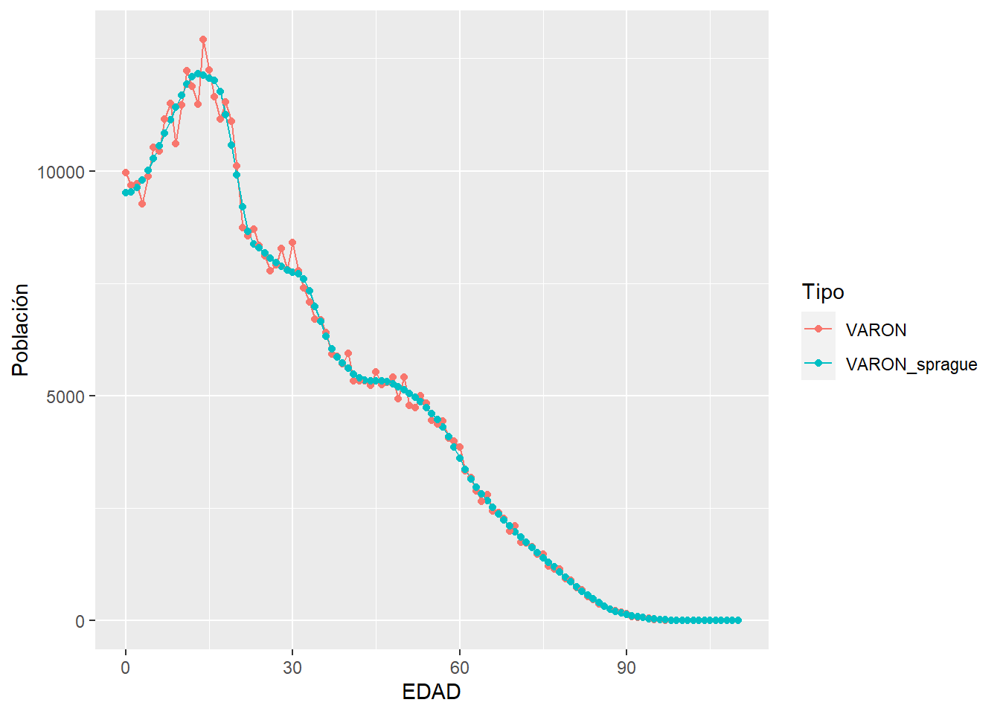
Pero atrás de esto esta ggplot!
ggplot() +
geom_segment(aes(x = 2011, y = 5, xend = 2015, yend = 9), color = "red", size=1)+ # debería ir al final
geom_point(aes(x=2015, y=9),shape=4,size=2)+
coord_equal() +
scale_x_continuous(breaks=2010:2020, expand = c(0,0)) +
scale_y_continuous(breaks=0:10, expand = c(0,0)) +
geom_vline(xintercept = 2010:2020, color="grey", size=.15, alpha = 0.8) +
geom_hline(yintercept = 0:10, color="grey", size=.15, alpha = 0.8) +
geom_abline(intercept = seq(-2020, -2000, by=1), slope = 1, color="grey", size=.15, alpha = 0.8)+
labs(x="Año", y="Edad",title = "Dieagrama de Lexis c/ ggplot")+
theme_minimal()+
theme(panel.grid.major = element_line(colour = NA),
panel.grid.minor = element_line(colour = NA),
plot.background = element_rect(fill = "white",
colour = "transparent"))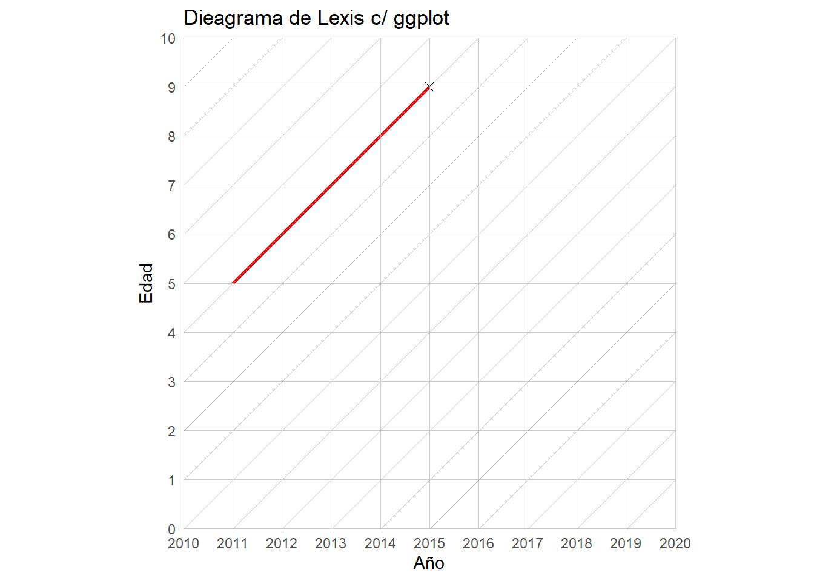
Para incluir triángulos y cuadriláteros se utiliza geom_plygon. Para dar superficie, de manera similar al gráfico Scholey & Willekens (2017), se utiliza geom_tile. Para esto último un gran tutorial de Tim Riffe.
5.5 Estudio de cohorte: un ejemplo
Construyamos una tabla de cohorte a partir de un grupo de estudiantes que iniciaron con 3 años de edad su trayectoria educativa el 3/3/2000, y donde la salida es dejar el estudio (sea cual sea el nivel alcanzado) por primera vez antes de retomar o abandonar definitivamente (¿en este contexto qué sería \(\omega\)?). Simulemos el comportamiento de 1000 chicas/os con distribución uniforme de la edad y distribución gamma del tiempo de permanencia:
set.seed(100) # qué es esto?
clase <- data.frame(edad_inicio = runif(n = 1000, min = 3, max = 4),
tiempo_exp = rgamma(n = 1000, shape = 40, rate = 2)) %>%
mutate(edad_salida = edad_inicio + tiempo_exp)ggplot(clase) +
geom_density(aes(x=edad_salida), fill=2, alpha=.1)+
labs(x="Edad de salida", y="Densidad", title="1000 casos simulados de permanencia inicial")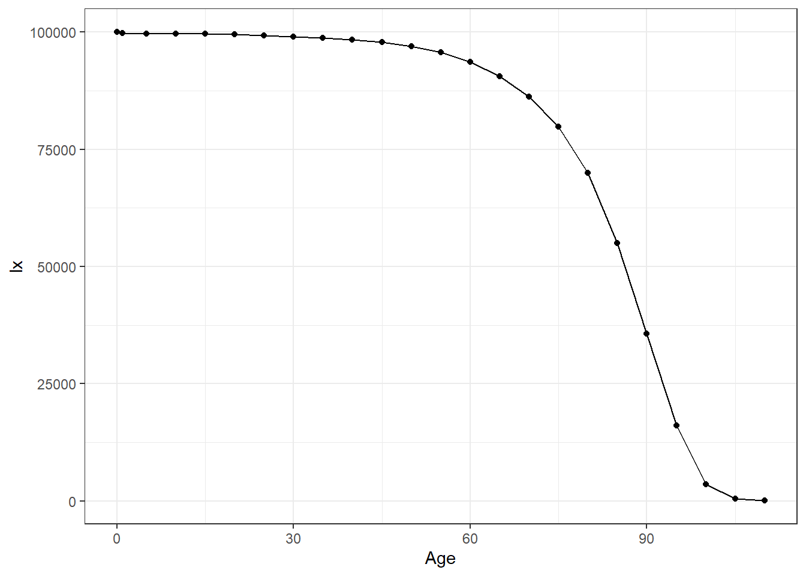
Contruyamos el diagrama de Lexis de esta cohorte:
mylexis <- lexis_grid(year_start = 2000, year_end = 2025, age_start = 3, age_end = 30)
nacimiento <- as.Date("2000-03-03") - clase$edad_inicio * 365.25
salida <- nacimiento + clase$tiempo_exp * 365.25
mylexis <- lexis_lifeline(lg = mylexis,
birth = nacimiento,
entry = "2000-03-03",
exit = salida, lineends = T,
colour = 4, alpha = 1/3)
mylexis
Si tuviéramos que estimar…
# la edad media de salida
mean(clase$edad_salida)
# la probablidad de "sobrevivir" a la edad 18
clase %>% filter(edad_salida >= 18) %>% summarise(`18p0` = n()/nrow(clase))
# probablidad de abandonar en los 20 años cumplidos
clase %>% filter(edad_salida >= 20 & edad_salida < 21) %>% summarise(`1p20*1q20` = n()/nrow(clase))## [1] 23.4662
## 18p0
## 1 0.974
## 1p20*1q20
## 1 0.1035.5.1 Actividad
Crear un diagráma de Lexis y señalar las líneas de vida de tus 5 parientes más cercanos. Selecciona los rangos de los ejes para que la visualización sea buena.
Crear un diagrama de Lexis señalando los fallecidos en 2015 con edad 15, diferenciando cada cohorte con dos colores distintos.
Considerando el ejercicio de permanencia escolar:
- Destaca con una cruz roja aquellos dos niñas/os que abandonaron primero y último.
- Calcula la esperanza de vida de permanencia “inicial” (en el sentido antes aclarado), si es que no lo hicimos ya.
- Cambia la semilla del ejercicio previo (
set.seed()) por cualquier entero que desees y repite el ejercicio. ¿Hay diferencias?¿Por qué?
5.6 Recursos Adicionales
Hulíková Tesárková & Kurtinová. Application of “Lexis” Diagram: Contemporary Approach to Demographic Visualization and Selected Examples of Software Applications.
Rau, R., Bohk-Ewald, C., Muszyńska, M. M., & Vaupel, J. W. (2018). Visualizing Mortality Dynamics in the Lexis Diagram. Springer. doi: 10.1007/978-3-319-64820-0
5.7 Otras visualizaciones
S. Preston (1975) encontró una relación matemática (al menos) a nivel de país entre la esperanza de vida al nacer y el producto per cápita. Veamos que ocurre específicamente en el Continente Americano utilizando el paquete de datos gapminder.
library(gapminder)
p <- ggplot(filter(gapminder, continent == "Americas"),
aes(x = gdpPercap, y = lifeExp))
p + geom_point() # dispersión
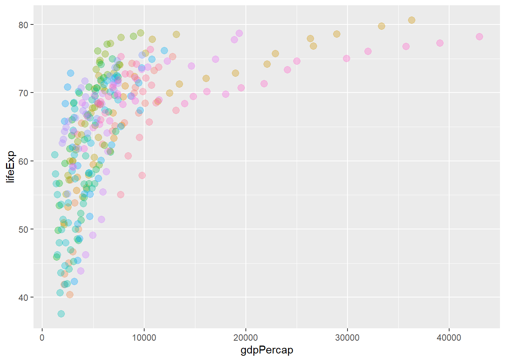
p1 <- p + geom_point(aes(color = country, size = pop), alpha = 1/3) # fijate el lugar de size
p1 <- p1 + geom_smooth(lwd = 1, lty = 2, color = 2, se = FALSE)
p1
p + geom_point(alpha = 1/3, size = 3) + facet_wrap(~ country) +
geom_smooth(lwd = 1.5, se = FALSE) +
theme_void()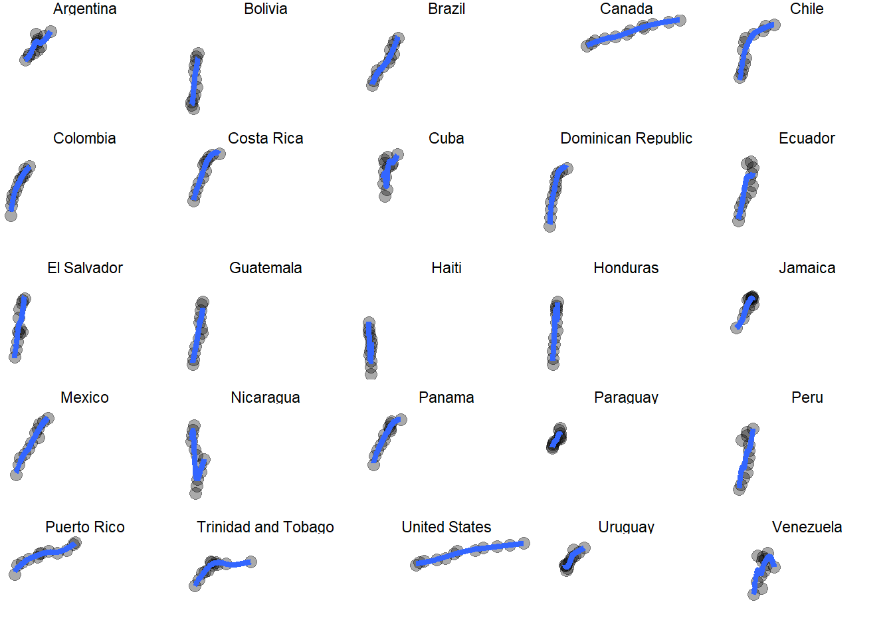
¿Componer gráficos en una sola hoja? (tomado de Jenny Bryan)
#install.packages("gridExtra")
library(gridExtra)
p2 <- ggplot(filter(gapminder, year==1952 & continent!="Oceania"), aes(x = lifeExp, color = continent)) + geom_density()
p3 <- ggplot(filter(gapminder, year==2007 & continent!="Oceania"), aes(x = lifeExp, color = continent)) + geom_density()
grid.arrange(p2, p3, nrow = 2, heights = c(0.5, 0.5))
¿Qué problemas encuentras en este arreglo?
5.8 Material adicional (y no tanto)
Sí, hay un libro.
Estas notas fueron hechas siguiendo principalmente The Hitchhiker’s Guide to Ggplot2 y el curso de Jenny Bryan.